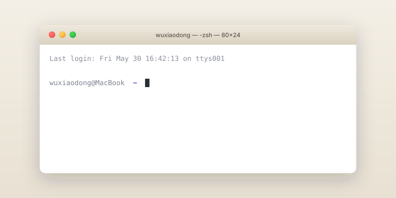

把工具装到电脑里
这是整本教程里劝退率最高的一章,因为它处于"还没尝到甜头"和"已经面对一堆陌生界面"的中间。所以我会拆得很细,你只要按顺序往下做即可。卡住的话——这一章末尾的「常见踩坑」十有八九能救你。
本章基于 Codex CLI 截至 2026 年 5 月 的版本(v0.119.x 系列)。如果你看到的界面和教程描述不完全一致,先按本章思路尝试,再去附录 D 查看勘误。
第一步 · 认识"终端"
你即将要用一个叫做终端的东西。它就是电脑里那块黑乎乎的、只能用键盘打字的窗口。它有名字:
- Mac 上叫 终端 / Terminal
- Windows 上叫 Windows PowerShell 或 终端
它在我们这本书里的角色:你的客厅。本教程里所有的"打开 Codex 跟它聊天"、"安装工具"、"启动网页预览"都发生在这间客厅里。
Mac:怎么打开终端
按 ⌘ + Space,在弹出的搜索框里输入 终端(或 Terminal),回车。出现一个黑底或白底的窗口,里面有一行字以你的电脑名字开头、以 $ 或 % 结尾。这就对了。

wuxiaodong@MacBook ~ % 的提示符,后面有一个会闪烁的小方块光标。Windows:怎么打开终端
按 ⊞ Win 键,输入 powershell,回车。出现一个蓝色或黑色背景的窗口。如果你的系统是 Windows 11,推荐你输入 终端(系统自带的 Windows Terminal 比 PowerShell 体验更现代)。
在终端里输入的每一行命令,只有你按下回车才会执行。错了没关系,几乎不会"把电脑搞坏"。最坏的情况就是它告诉你"command not found"——意思是它没听懂——你重新输入即可。
第二步 · 安装 Node.js
Codex CLI 是用一个叫做 Node.js 的工具发布出来的。所以我们先得装它。
把 Node.js 想象成一台咖啡机,Codex CLI 是一种咖啡豆。你需要先有咖啡机,才能煮出咖啡。
需要的版本
本教程发布时,Codex CLI 要求 Node.js 22 或更高版本。
安装方法(任选一种)
方法 A · 官网下载(推荐给所有新手)
- 打开 nodejs.org
- 页面会自动识别你的系统,点显示 LTS 的那个大按钮(LTS = 长期支持版,稳定)
- 下载完后双击安装,一路点"继续"/"下一步"即可,不需要修改任何选项
方法 B · Mac 用户也可以用 Homebrew
如果你的 Mac 已经装过 Homebrew,可以在终端里输入这行,然后回车:
# 装 Node.js 的最新长期支持版
brew install node
怎么确认装好了
回到终端,输入下面这行(每一个字符都要一样,包括短横),按回车:
node --version
如果它回了一行 v22.x.x 这样的东西(数字可能不一样,但开头要是 v22 或更高),恭喜你,Node.js 装好了。
第三步 · 安装 Codex CLI
正确包名是 @openai/codex。不带 @openai/ 前缀的 codex 是另一个 2012 年的无关项目,装下来啥也不能干。
下面这条命令,你可以直接复制,不要手敲(避免抄错)。
# 把 Codex CLI 装到电脑里,任何地方都能用
npm install -g @openai/codex
按回车后,终端里会刷过一大堆字。这是它在下载文件,正常现象。等到提示符再次出现、光标变成可以输入的状态,就装好了。
验证一下:
codex --version
看到 codex 0.119.x(数字可能不同)就算成功了。
如果上面那条命令转了很久(超过 3 分钟)还没动静,大概率是 npm 默认源被墙到了。可以切换到国内镜像源(下面这条只需运行一次):
npm config set registry https://registry.npmmirror.com
换好之后,重新跑一次安装命令。但要注意:镜像同步可能有几小时的延迟,极端情况下镜像上的最新版还没同步过来,这时你可能需要切回官方源。
第四步 · 登录 Codex
装好之后,Codex 还不知道你是谁、能用谁的额度。我们要"登录"一下。在终端里输入:
codex login
它会让你二选一:
- 选项 A:用 ChatGPT 账号登录(推荐)——它会打开浏览器,你正常用 ChatGPT 账号登录就行。前提是这个账号有 Codex 使用权限。套餐和额度会变化,以 OpenAI 官方页面和你账号里显示的权限为准。
- 选项 B:用 API Key 登录——如果你不订阅 ChatGPT,可以去 platform.openai.com/api-keys 申请一个 API Key,贴回终端。这种方式按使用量计费。
本教程的全部内容都按“小项目、小步跑”的方式设计。只要你的账号能正常使用 Codex,就不需要一开始就开很大的权限或很复杂的计费方案。
OpenAI 的服务在中国大陆不可直接访问。你需要自行解决可访问 openai.com 的网络环境,本教程不教这一步。如果你的浏览器现在能打开 chat.openai.com 并正常用 ChatGPT,就足够走完整本书。
第五步 · 第一次和 Codex 对话
现在,把终端 cd 到桌面(随便选个地方),然后输入 codex,回车:
# 进入桌面(Mac/Windows 命令略不同,这是 Mac 的) cd ~/Desktop # 启动 Codex,进入对话模式 codex
第一次启动会出现一个"欢迎"界面,告诉你它现在的工作目录、用的是哪种审批模式(默认是工作区可写,意思是:它能改当前文件夹里的文件,不能改外面的)。
看到底部出现一个输入框、提示你"按一下回车开始打字"之后,试着说这句话:
它会回你一段话,大致告诉你:它是一个能在终端里读你文件、改你文件、执行命令的 AI 助手,然后列出当前桌面有哪些文件。如果你的对话窗口里出现了类似下面这样的回复,说明一切就绪:
~/Desktop,里面有 3 个项目:screenshots/、简历.pdf、笔记.md。
请认真看一下屏幕。你现在拥有了一个能听你说话、能读你电脑文件、能帮你写代码的 AI 助手。这件事本身就是 2024 年以前不可能的。先停下来欣赏一下这一刻。
动手试试
仍然在 Codex 对话窗口里,把下面这段话发给它:
my-product-site,里面放一个空的 index.html 文件。完成后告诉我你做了什么。它会先给你看一份"我打算做这些"的预告(我们叫它 plan),并请求你的批准。 看一眼,如果合理,按 y(或者点 Yes)。然后它会把文件夹建出来。
- 打开桌面文件夹,确认
my-product-site/真的出现了 - 进到里面,确认
index.html真的存在(虽然里面是空的) - 回到 Codex 对话窗口,输入 /quit 退出(我们留着这个文件夹,后面会用)
my-product-site 文件夹,里面有一个 index.html。常见踩坑全集
到这里,绝大多数读者已经能跑起来了。但如果你卡在某一步,把展开下面对应的卡片对照一下。这些都是真实有人踩过的。
装完 Node.js 后输入 node --version 显示 command not found
- 现象
- 终端回复你
command not found: node,或者'node' 不是内部或外部命令。 - 原因
- 你的终端不知道 Node.js 装到哪里去了。这种情况几乎只会发生在你跳过了官网安装包的步骤、自己手动解压安装时。
- 解决
- 关掉当前终端窗口,重新打开一个,再试一次。如果还不行,删掉 Node 重装一次,这次一定用官网下载的 .pkg / .msi 安装包,它会替你配置好。
误装了不带 @openai/ 的 codex 包
- 现象
codex --version显示一个很老的版本号(比如 0.0.x),或者执行codex直接报错。- 原因
- 你装到了一个 2012 年的同名旧包,它跟 OpenAI 没有任何关系。
- 解决
- 先卸载错的:
npm uninstall -g codex,然后带前缀重装:npm install -g @openai/codex。
npm install 中途报 EACCES 权限错误
- 现象
- 错误信息里有
EACCES: permission denied。 - 原因
- 你的电脑禁止 npm 把文件写到全局目录。
- 解决
- Mac 用户可以在命令前加
sudo(会让你输入开机密码):sudo npm install -g @openai/codex。Windows 用户右键 PowerShell,选"以管理员身份运行",再装。
npm 安装卡了几分钟没动,看不到进度
- 现象
- 跑完命令后终端一动不动,光标也不闪了一样。
- 原因
- 九成是网络问题。中国大陆访问默认的 npm 官方源经常龟速或超时。
- 解决
- 先按 Ctrl+C 中断,然后跑
npm config set registry https://registry.npmmirror.com切到国内镜像,再重装。
装完 Codex 后输入 codex --version 显示 command not found
- 现象
- 明明刚装好,终端却说找不到
codex。 - 原因
- npm 的全局目录没在你的 PATH 里。
- 解决
- 先重启终端窗口试试。如果还不行,运行
npm bin -g,它会输出一个路径,你需要把这个路径加到 PATH 里——具体怎么加,把上面那条npm bin -g的输出和你的系统(Mac/Win)一起告诉 Codex(就用 ChatGPT 网页版也行),让它给你写好一行配置命令。
登录时浏览器没自动弹出
- 现象
codex login之后,终端里出现一长串带https://的链接,但浏览器没动。- 原因
- 有些远程终端 / 公司电脑禁止自动打开浏览器。
- 解决
- 没关系。复制那段以
https://开头的长链接,粘贴到你的浏览器地址栏,回车,正常登录。完成后终端会自动检测到。
登录失败,提示账号没有 Codex 权限
- 现象
- 用 ChatGPT 账号登录后被告知此账号无 Codex 权限。
- 原因
- 这个账号当前没有 Codex 使用权限;或者你登录到了另一个账号。部分环境也可能被团队/企业策略限制。
- 解决
- 先确认账号是否有 Codex 权限。需要 API Key 方式时,去 platform.openai.com/api-keys 申请 API Key,重跑一次
codex login选择对应登录方式。
第一次 codex 启动很慢、转半天才进入对话界面
- 现象
- 启动后等了 30 秒以上才进入"可以打字"的状态。
- 原因
- 第一次启动需要做一些初始化(扫一遍工作目录、加载配置)。如果工作目录是个超大文件夹(比如桌面塞了上千个文件),会慢一些。
- 解决
- 下次启动前,先
cd到一个干净的子文件夹(比如我们刚建的my-product-site)再启动 Codex,会快得多。
Codex 提示"network error"或一直转圈圈
- 现象
- 发送消息后等了很久没回应,或者直接报错说连不上。
- 原因
- OpenAI 的服务器从你的网络环境过不去。
- 解决
- 这是网络环境问题,本教程不展开。请确保你的浏览器现在能打开
chat.openai.com并正常用 ChatGPT,Codex 才能正常工作。
从教程复制命令到终端后报"语法错误"
- 现象
- 明明复制了命令,粘贴执行却报奇怪的错。
- 原因
- 从某些场景复制时,英文引号
"可能被自动替换成了中文引号"",终端看不懂。 - 解决
- 本教程的代码块都用"复制"按钮,它复制的一定是纯 ASCII 字符,不会有这个问题。不要手敲,不要从微信/Word 复制。
Windows 沙盒功能提示 experimental
- 现象
- Windows 启动 Codex 时看到一句小字提示"Windows sandbox is experimental"。
- 原因
- 2026 年早期 Codex CLI 在 Windows 上的沙盒实现还在打磨阶段。
- 解决
- 对零基础读者无影响,继续用即可。如果你以后做的项目对安全特别敏感,可以考虑在 WSL2(Windows 下的 Linux 子系统)里跑 Codex,体验更稳。这件事不在本教程范围。
公司电脑根本不让我装东西
- 现象
- npm 装不了、PowerShell 提示"组策略禁止"。
- 原因
- 你的公司对设备有管控。
- 解决
- 本教程的内容对你的私人电脑友好,对公司电脑不友好。建议用你自己的电脑跟着学。